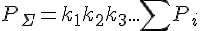

На финальном этапе надежность считается как произведение коэффициентов на суммарную надежность устройства

k1 - внешние мех. воздействия
k2 - температура
k3 - электрические нагрузки элементов
k4 - Электро-магнитная совместимость
и т.д.
Отчет по теплу: